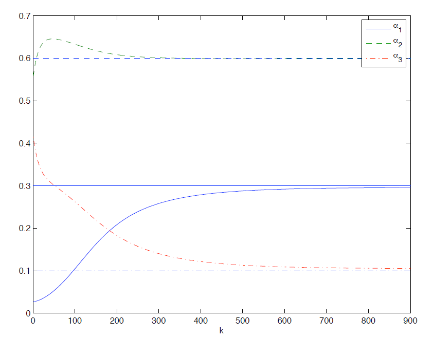

Scaled gradient-based algorithms for supervised hyperspectral image unmixing
Two scaled gradient iterative methods
are proposed for estimating the abundances of the linear mixing
model. The first method is obtained by including a normalization
step in the scaled gradient method. The second method inspired by
the fully constrained least squares algorithm includes the sum-to-one
constraint in the observation model with an appropriate weighting
parameter.
The proposed algorithms are efficient alternative to the very popular Fully Constrained Least Square (FCLS) algorithm. One
of the main advantages of FCLS is its computational
cost since few iterations are required to ensure convergence to a local minimum of the least-squares criterion. However, the convergence
of this algorithm to a global minimum of the LS criterion
is not guarantied which is its main drawback.
Convergence of the SGM algorithms is illustrated in Fig. 1.

Fig. 1. Normalized SGM estimates of the abundances versus the iteration number k for SNR = 15dB.
The abundance estimation procedure and the main results are detailed in a paper presented at the IEEE Statistical Signal Processing Workshop in 2009.
- article
 [ .pdf - 610ko ].
[ .pdf - 610ko ].
The corresponding Matlab codes are available below.
- matlab codes
 [ .zip - 23.5Ko ].
[ .zip - 23.5Ko ].